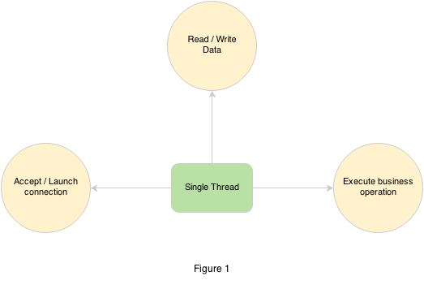
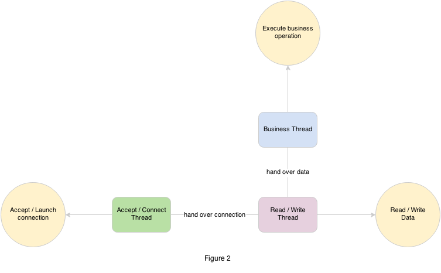

craft-atom-nio: Thread Model Illustration
Before we illustrate the thread model of craft-atom-nio, think about thread model itself. What thread model means? it means thread collaboration mechanism and thread number decision.
Single Thread do Everything

As shown in figure 1, only single thread to do everything include:
- Accept connection or launch connection
- Read or write data
- Execute business operation
This is the most simple thread model, but also it is too simple too naive. Because single thread is inefficient, at any time just only one task can be handle.
Thread Division by Responsibility

As shown in figure 2, another thread model, we divide thread by the responsibility, for example:
- One thread be responsible for accept or launch connection
- A handful of threads be responsible for read and write data
- A group of threads be responsible for execute business operation
Yes this thread model is quite appropriate for craft-atom-io api model.
IoAcceptor or IoConnector holds one thread to be responsible for accept or launch a connection, it is a easy work, so one thread is enough.
IoProcessor holds a handful of threads to be responsible for read and write data, this kind of work is CPU intensive, so the default threads number is CPU core number.
Last whether we need a group independent threads to be responsible for execute business operation. It depends on the workload of business operation. Because the inherent cost of thread hand over, if the workload of business operation is much larger than the cost, you should use a group of independent threads to execute, then you can get higher throughput.